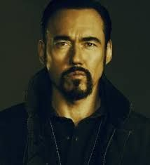
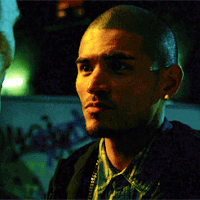
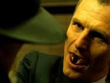
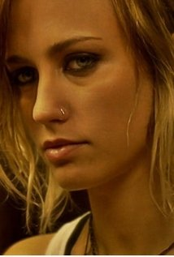

The Strain-Adapted from The Strain: Trilogy
Initial Release Date: July 13, 2014
Writers: Guillermo del Toro and Chuck Hogan
Why is It a Hit?
If you are into gore, blood, and action then this is the show for you.
Whlie the show's potitical and philosophical subtext add
necessary heft for adult viewers. Rotten Tomatoes critics even rated
the series higher than most current shows in this genre.
Background of Show:
The Strain is a 2009 vampire horror novel by Guillermo del Toro and Chuck
Hogan. The self-titled book is the first installment in The Strain Trilogy, and
was followed by The Fall (2010) and The Night Eternal (2011).
It was later adapted into a television series which is now airing on FX.
Premise:
A thriller that tells the story of Dr. Ephraim Goodweather,
the head of the Center for Disease Control Canary Team in New York City.
He and his team are called upon to investigate a mysterious viral outbreak
with hallmarks of an ancient and evil strain of vampirism.
| Actors/Actresses | Characters in Series |
|---|---|
| Corey Stoll as Ephraim Goodweather |
 |
| Kevin Durand as Vasiliy Fet |
 |
| Miguel Gomez as Augustin 'Gus' Elizalde |
 |
| Richard Sammel as Thomas Eichorst |
 |
| Ruta Gedmintas as Dutch Velders |
 |
Images by - © Copyright 2014-2016, FX Networks All Rights Reserved
More Reasons to Watch
- Vampires
- Apocalytic thriller
- Bits of Dark Humor
- Good Special effects for a TV Series